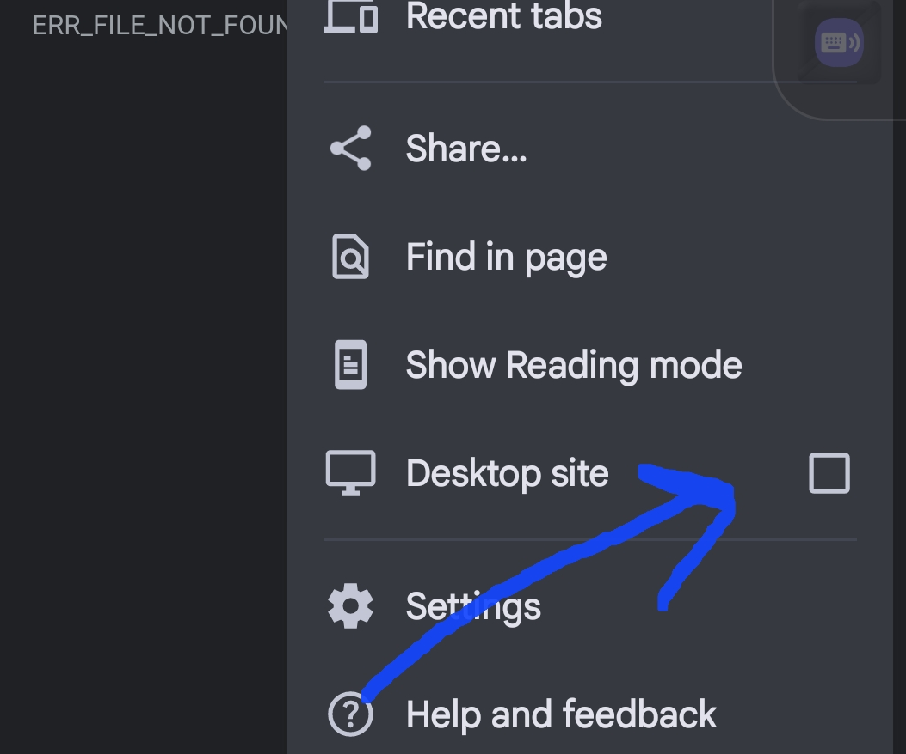
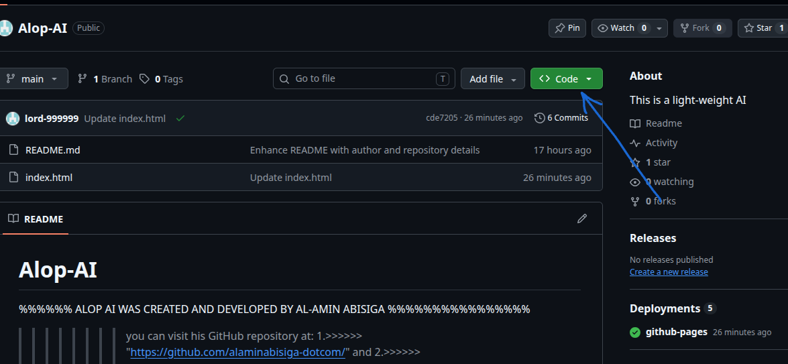
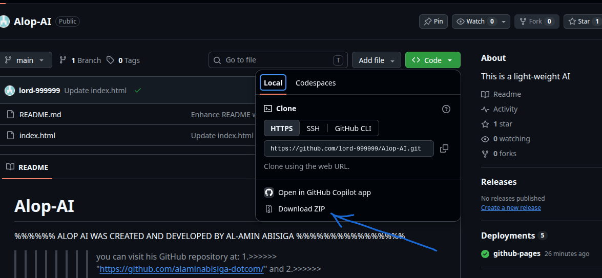
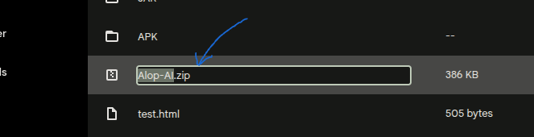
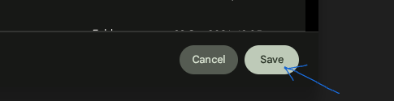
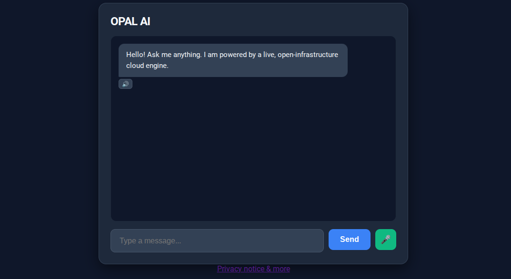

Alopal AI is an ultra lightweight AI client designed for free, fast, and convenient local execution. Built entirely as an HTML5 ecosystem, it operates locally on your machine—meaning it requires absolutely no persistent network connectivity to run once deployed onto your device.
1. Download Strategy & Archive Extraction
ALOPAL AI can be retrieved using two secure methodologies:
Navigate to the interactive web portal and select the "Download ALOPAL AI" launcher action at the bottom of the interface.
Clone or extract the production-ready distribution container hosted securely on GitHub.com.
To deploy the client ecosystem from the GitHub distribution trunk, execute the following step-by-step pipeline:
Step 2: Force desktop viewport rendering. If operating via a mobile device browser, access configuration parameters and toggle "Desktop site" onto an active state.

Warning: If desktop workspace emulation is bypassed, step 3 dynamic context modals will fail to initialize.
Step 3: Upon structural context generation, target and click the green Code layout element to reveal the primary version-control dropdown menu.

Step 4: Select the terminal asset link explicitly designated as "Download ZIP" located at the base of the dynamic canvas layout.

Step 5: The infrastructure will route your thread sequence into a sub-domain pipeline where system alerts will require verification of file system write permissions.
Step 6: You may safely custom-name the runtime compilation array asset file during input verification. However, you must enforce string confirmation matching the target extension rule: .zip.

Step 7: Commit file creation by executing a touch or click interface command on Save or Download.

How to Extract the File Container (.zip)
Before launching, the archive payload contents must be safely decompressed to your local device file systems:
Locate the downloaded file wrapper → Right-click the asset folder container → Choose "Extract All..." from the layout menu context → Select an output path location → Click the final Extract prompt.
Locate the asset within Finder space → Perform a standard mouse double-click action directly on the .zip file object wrapper. The native system Archive Utility engine instantly initializes data extraction safely into the exact matching local path.
iOS: Fire up the system Files ecosystem utility → Press down on the item target framework → Tap directly on "Uncompress" or tap once to unfold. Android: Launch your Files by Google application tool workspace → Tap directly over the file → Click the pop-up confirmation marker titled "Extract".
Video Walkthrough: Watch this production walkthrough detailing exact archive compression file extraction processes across platforms:
2. Local Deployment & Application Execution
ALOPAL AI relies entirely on standard HTML5 client technology, letting you view it in any modern browser without configuring specialized local server hosts or sandbox tools.
How to Initialize and Run the Client Document:
Method A (Double-Click Execution): Navigate straight into the unzipped folder asset database workspace. Locate the main client entry point file designated as index.html (or similar .html file) and execute a standard mouse double-click action to seamlessly open the interface in your device's default web browser environment.
Method B (Drag and Drop Protocol): Launch any preferred modern browser platform window (such as Chrome, Firefox, Safari, or Edge). Simply click and drag the local .html file directly into the main address bar area or open page space to instantly parse and render the application canvas.
Method C (Manual File Mapping): Right-click your offline app document file asset card → target and hover over the contextual choice "Open with" → select your preferred web browser engine.
Video Walkthrough: If you encounter an error where your system tries to open the program inside text software like Notepad instead of a web browser, use this quick rendering resolution guide:

3. Terms of Deployment & Privacy Guardrails
Alopal AI is entirely open-access and free to pull down, deploy locally, or distribute across internal peer networks.
The algorithmic models perform actions with optimal precision bounds, though automated clients may occasionally generate semantic errors or output hallucinations. Always verify structural data outputs independently.
Crucial Data Protection Warning: Never transmit or insert high-risk personal identifiers—including credit card data records, banking credentials, or private personal data points—into the execution fields. The ALOPAL AI local node works programmatically without conscious human-centric oversight and does not manage standard privacy rules like a human operator.
Developer Al-amin Opemipo Abisiga along with any corporate associates bear zero legal or functional liabilities regarding performance regressions, data issues, or misuse arising from local code execution. Users accept full runtime agency.
All core system rights are reserved. Any unapproved publication, replication, or systematic modification of this architecture's source codebase files, framework structure, layouts, or structural styling formulas without written sign-off from Al-amin Opemipo Abisiga is strictly illegal under international copyright enforcement laws. You can access the primary distribution license directly here.
The ALOPAL AI software project is safely hosted via the GitHub.com version ecosystem framework. Review the public license terms for full usage compliance specifications.